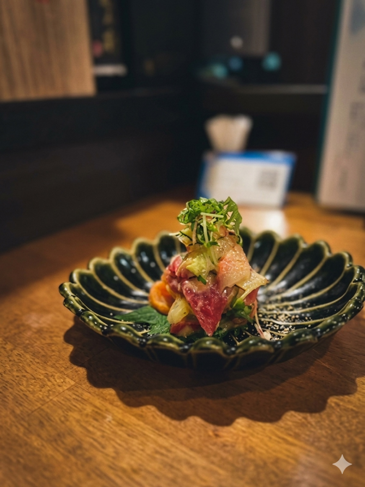
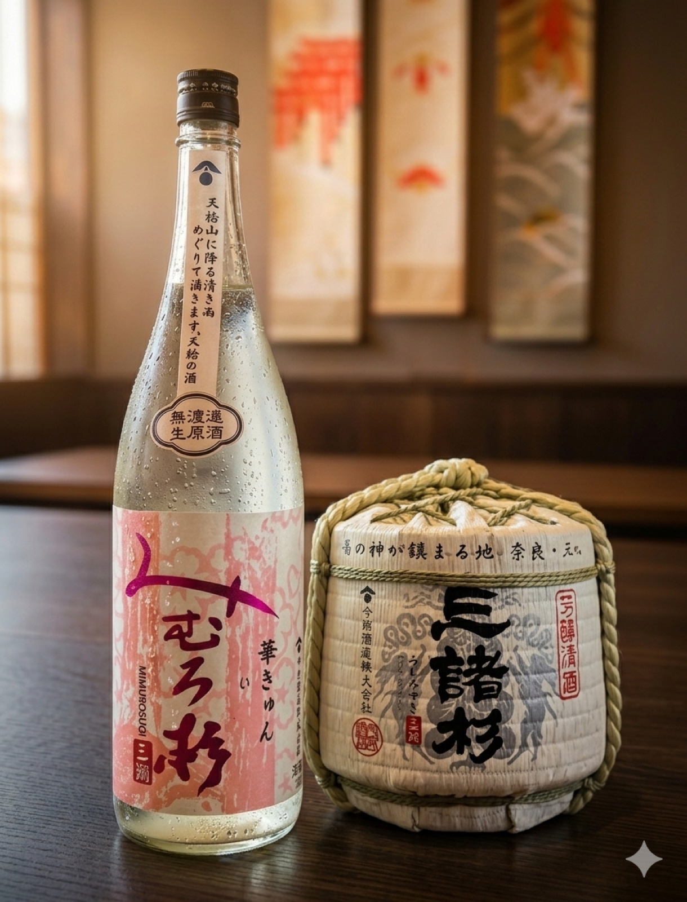
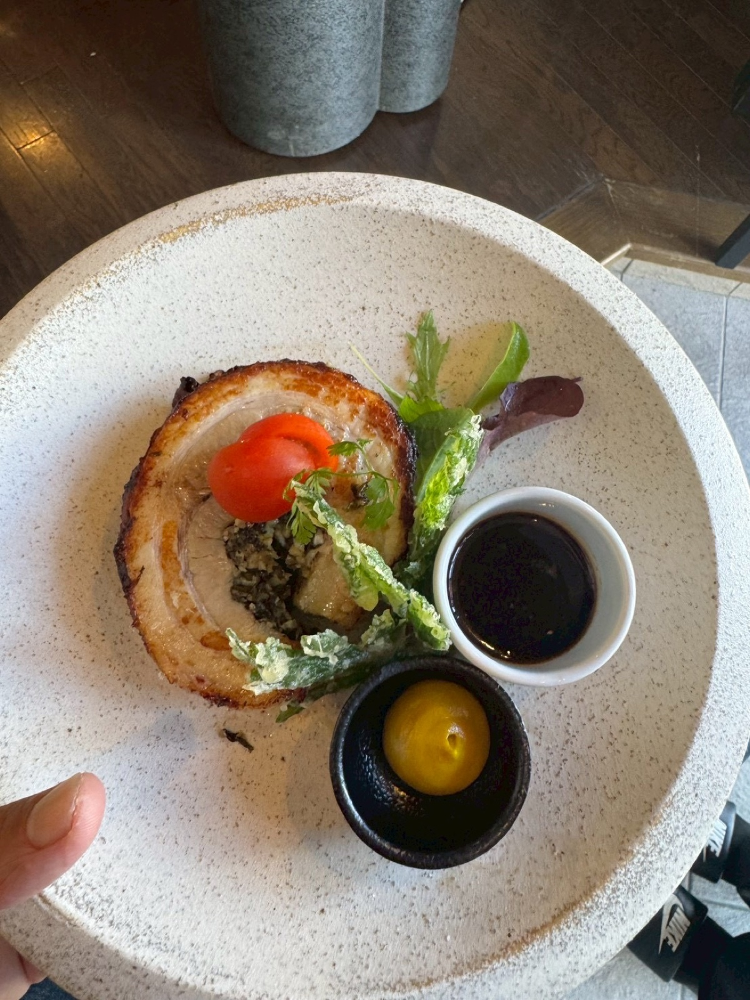
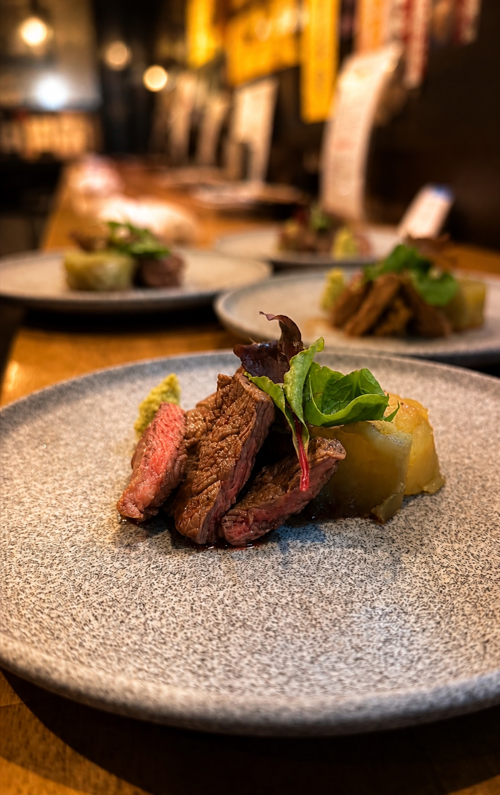

01海鮮
目にも鮮やかな刺身盛り。まずは味わっていただきたい、宴のはじまりの一皿。
URASOE / OKINAWA
今夜も帰りたくなる酒場、
四四一六。
OUR STORY
浦添市仲間にある、地酒と海鮮の酒場。海の幸を囲みながら、 その日の気分に寄り添う一杯を楽しむ。四四一六は、 いつもの夜を少し豊かにする時間をご用意します。

01目にも鮮やかな刺身盛り。まずは味わっていただきたい、宴のはじまりの一皿。

02季節酒から希少な一本まで。料理とともに楽しむ、新しい酒との出会い。

03仲間と語らう日も、ゆっくり飲む夜も。思わずまた足を運びたくなる場所へ。

DISH & SAKE
海鮮はもちろん、丁寧に仕立てた季節の肴も。 料理の余韻に合う地酒を選ぶ楽しさを、四四一六でお過ごしください。
Instagramで紹介された地酒
而今 / 田酒 / 飛露喜 / 三諸杉 / 波花 ほか
入荷内容は時期により変わります。最新情報はInstagramでご確認ください。GOOGLE MAPS REVIEWS
FOLLOW US
新しく入った地酒、季節の肴、お店からのお知らせをInstagramで発信しています。
ACCESS
営業時間・営業日は最新情報をご確認のうえご来店ください。